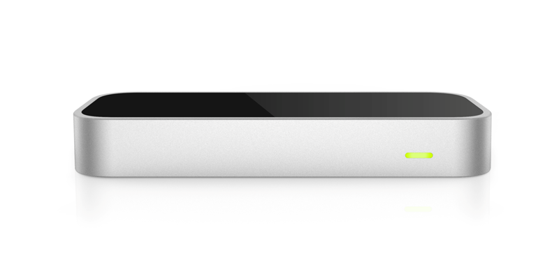

LeapMotion.js
Using Leap Motion with the Web
What is Leap Motion?
- Motion-sensing hardware device
- SDKs
- App store
How does it work?
Hardware
- IR camera and LEDs
- High-res, close-range
- USB
Software
- Daemon/Service
- Websocket server
- SDK
Ecosystem
- Developer program and community
- App store
How do we use it?
Let's install our devices
- https://www.leapmotion.com/setup
- (recommended) https://developer.leapmotion.com/
- If you already have it installed, try some of the apps
Config
- Open the Leap Motion control panel
- Make sure "Allow Web Apps" is enabled
- Must not have firewall blocking TCP over 127.0.0.1:6437, 6438, and 6439
What it does
- Views an "inverted pyramid" above the device
- Identifies hands, fingers, and pointing tools
- Reports location, motion, and gestures

Additional details
- Orientation is a right-handed Cartesian coordinate system
- Units are millimeters, mm/s, and radians

Data reporting
- Clients receive data at intervals
- Data is contained in a "frame"
- A frame contains info about detected objects
- Object info contains measurements
Let's start using it!
JS Client
- Source: https://github.com/leapmotion/leapjs
- Hosted: http://js.leapmotion.com/0.4.0/leap.js
Samples
For today, we'll start with some simple, prebaked samples.
See https://github.com/hverespej/LeapMotionSamples.
Sample 1: Simple hand tracking
- https://developer.leapmotion.com/documentation/javascript/api/Leap.Frame.html
- https://developer.leapmotion.com/documentation/javascript/api/Leap.Hand.html
- Try modifying to track some additional values
Sample 2: Hand tracking, gestures, and WebGL
- http://threejs.org/
- https://developer.leapmotion.com/documentation/javascript/api/Leap.Gesture.html
- Try modifying to add an additional behavior
Open Projects
- Let's brainstorm
- Find someone to work with
Questions?
Hakon Verespej, Madrona Venture Group